Step 3 of the wizard. The Map tab is the pipeline: its flows in order, with approvals and checks on the arrows between them. Each flow has its own tab with its blocks. Wireframes only; read screens.md for the legend, the states and the open points.
The default pipeline: six flows in order, five gates on the arrows, the pipeline's own properties on the right. Also the default state after a page load.
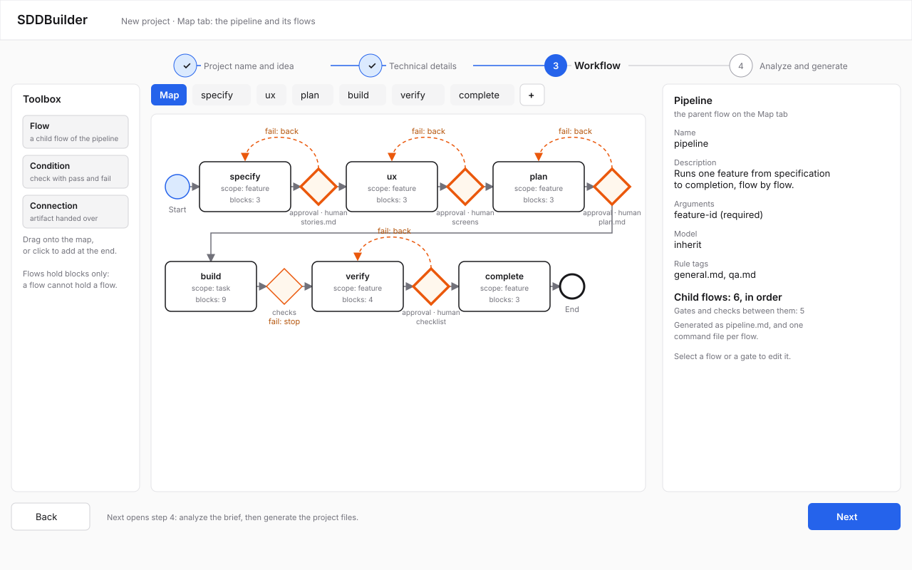
A connection that already has an approval: a Check is dragged over it (dashed target), and the connection's panel names the gate on the arrow and offers Add approval and Add check (open point A).
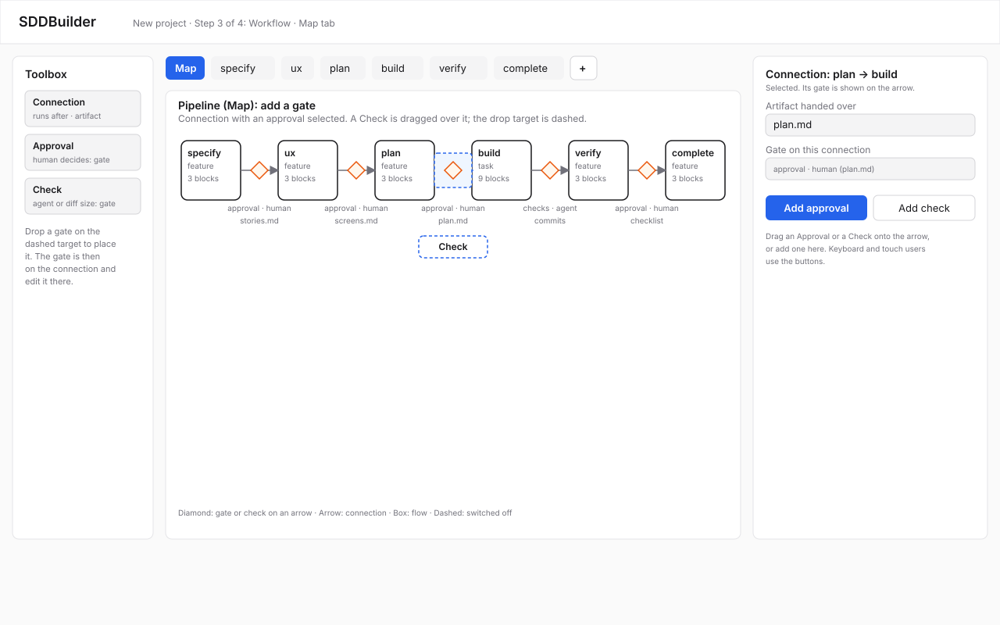
The check between build and verify: its type (checks or diff-size), its decider, its description and its routes. Review is not a check type.
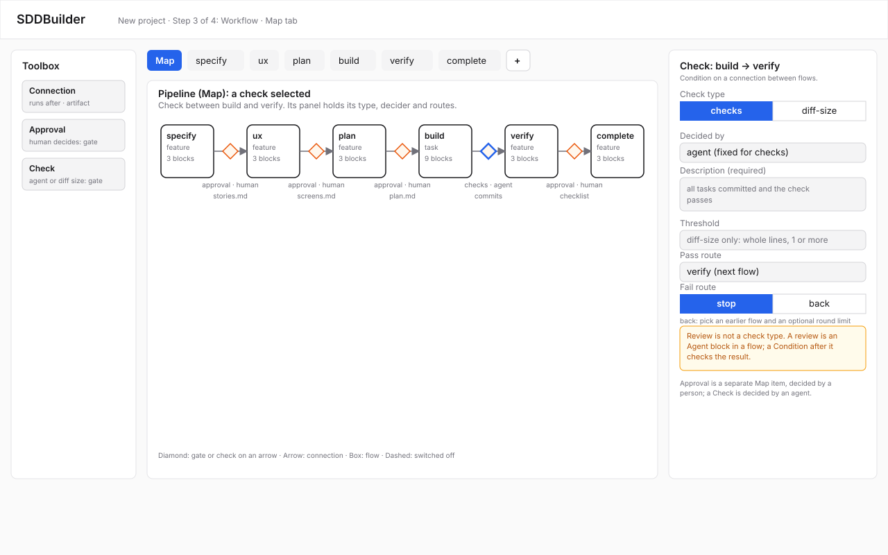
Live marks: a flow with no End, a connection that closes a cycle, a route left unwired. Marks sit next to the item and never block an edit.
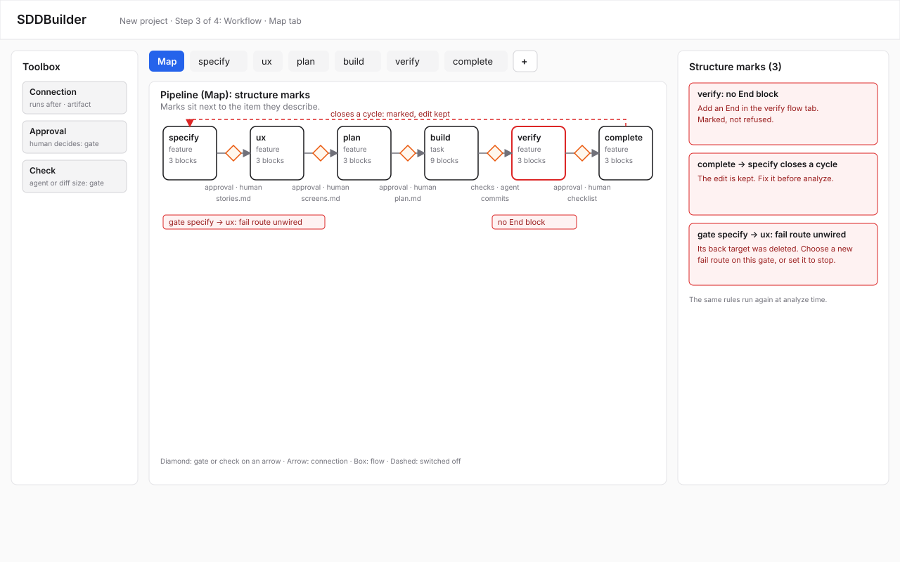
The build flow with its nine blocks numbered in order, and the flow toolbox (Start, Agent, Condition, Connection, End).
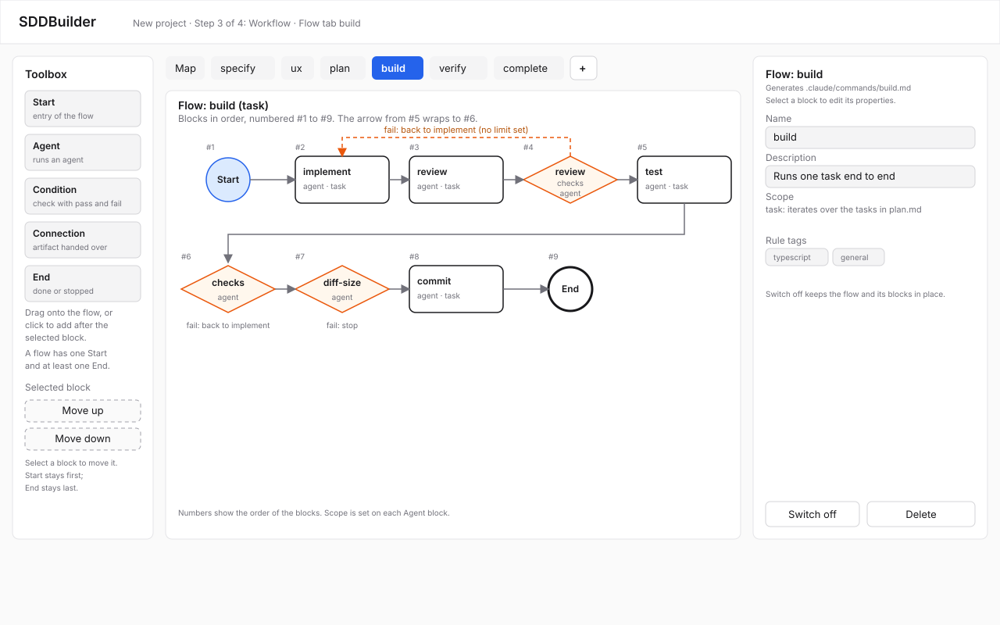
The implement agent: name, description, scope with its iteration source, model, tools, reads and writes, rule tags, body with its 4,000-character cap, its generated file, and Move up and Move down.
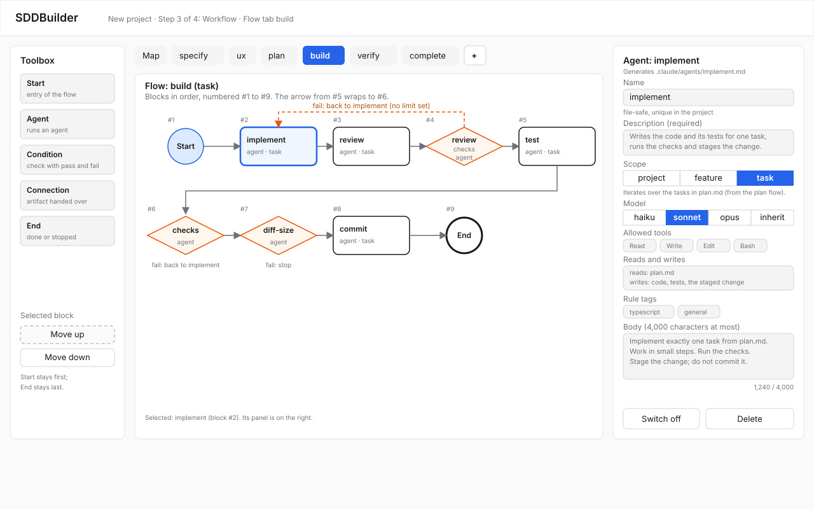
The review condition in the build flow: check type, description, pass and fail routes (only the next block, an earlier block of this flow, or stop), and an unbounded retry warning.
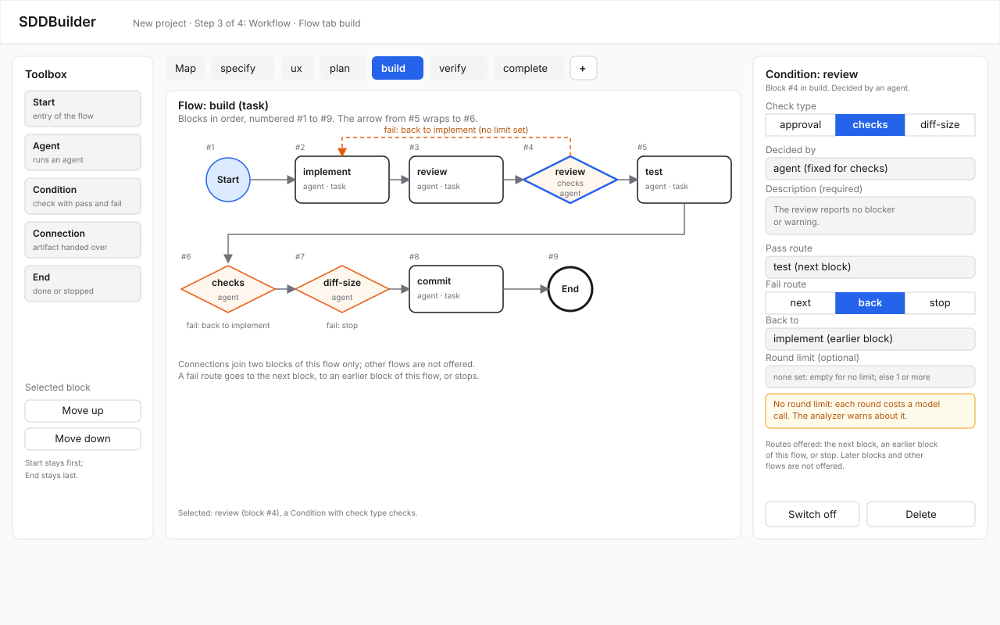
A custom agent in the ux flow with three refused values, and a second Start refused by the toolbox. A refused value is not applied until it is fixed; there is no Save (open point B).
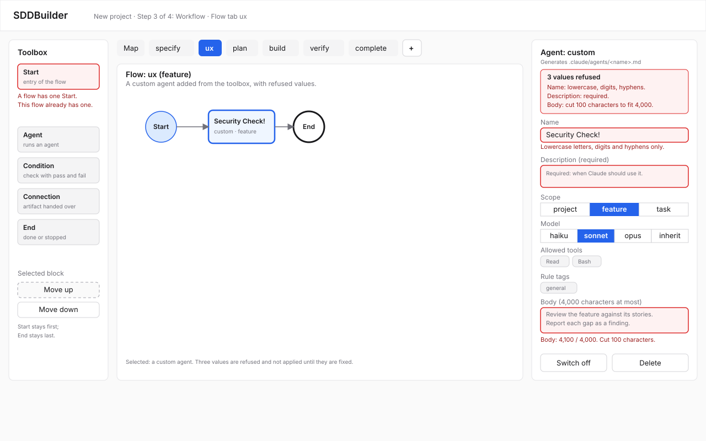
The test agent is switched off and stays in place, dashed, with its properties kept. Commit is selected and its delete asks first; deleting the Start is refused.
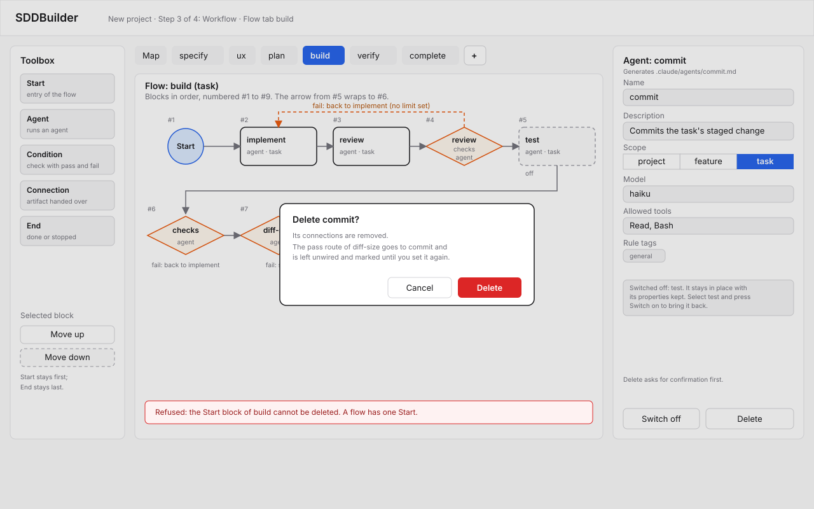
The pipeline's argument list, with a repeated argument name refused.
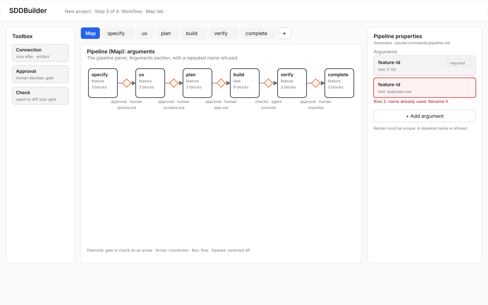
The check between build and verify with the diff-size type: its line threshold, and a threshold that is refused (not a whole number of lines, 1 or more).
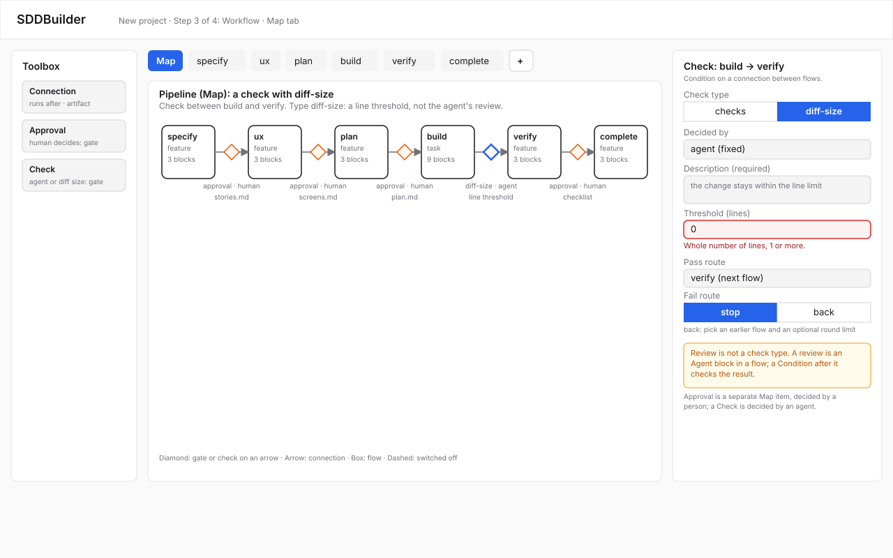